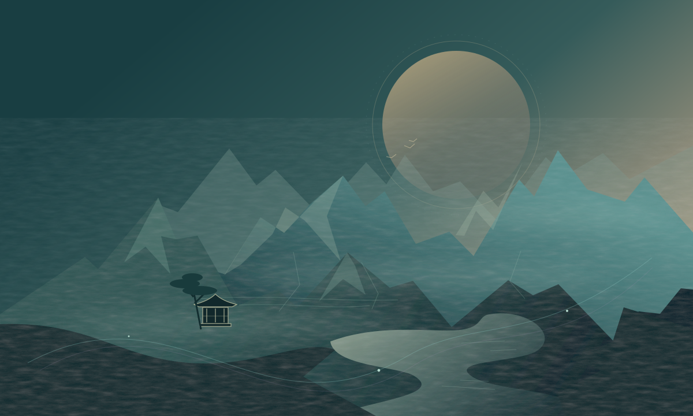

跳到主要内容
云
云墨阁
Digital Pavilion
卷首
归档
分类
签笺
知我
芳邻

YUNMO JOURNAL
/
山水之间 · 数字之外
以代码筑山，
以文字
行舟。
观技术之道，记造物之思。
一半是理性的探索，一半是自由的远游。
翻阅新章
↗
认识执笔人
→
心有山海
静而不争
云
墨
在此，记录思考的痕迹
卷 01 · 持续生长的数字花园
笺
松间明月长如此，身外浮云何足论。愿这里的文字，与你偶然相照。
檐下留笺 ↗
THE JOURNAL
纸上光阴
。
最新
精选
热门
01 / ESSAY
前端札记
阅
2026年9月17日
前端札记
1 分钟
初次见面
用一两句话概括文章内容，这段文字会显示在文章卡片和搜索结果中。
共 1 篇 · 第 1 / 1 页